Week 7: Introduction to Scientific Python
Software Development: Programming and Algorithms
Delivered by: Dr Joseph Aylett-Bullock
Weeks 1 to 5
| Building blocks | |
|---|---|
| Week 1 | Variables, types and expressions |
| Week 2 | Strings, conditions and loops |
| Week 3 | Lists, tuples, sets and dictionaries |
| Week 4 | Functions, arguments, return values and imports |
| Week 5 | Objects, methods, testing and debugging |
Which of these will help us work with a table of measurements?
Scientific Python libraries
| Library | What it gives us |
|---|---|
| NumPy | Arrays and numerical operations |
| pandas | Labelled tables |
| Matplotlib | Figures and plots |
| SciPy | Scientific algorithms |
The arrays and tables are objects. We use their attributes and methods.
Import NumPy
import numpy as npnp is an alias for the NumPy module.
np.array(...) creates an array.
A one-dimensional array
shape counts values along each axis. ndim counts axes.
dtype is the stored value type.
NumPy prints array values with spaces. A Python list uses commas.
A two-dimensional array
Reshape and transpose
Twelve values make four rows and three columns.
Reshape keeps the number and order of values. .T swaps the axes.
Two-dimensional slicing
a[rows, columns]
An index removes an axis
Compare a row with a one-row array.
Crop and reverse
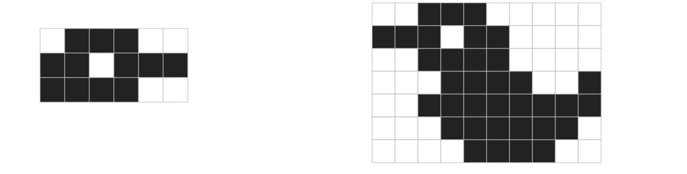
Three-dimensional arrays
An RGB image has three axes
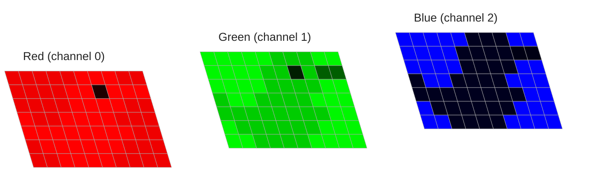
Pillow reads the image. NumPy stores its pixel values.
RGB[row, column, channel]: two spatial axes and a colour axis.
Three-dimensional slicing
a[row, column, channel]: each channel is a layer.
Here a.shape is (3, 4, 3). Our duck uses the same axis order: RGB.shape is (7, 10, 3).
A video adds another axis
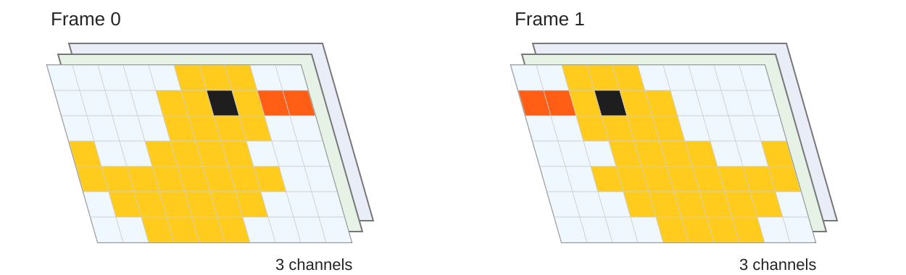
Frames, rows, columns, colour channels: four axes.
Names and objects
Views share a data buffer
A view and a copy
One operation, many values
Vectorisation expresses the calculation without a Python loop.
Which axis disappears?
Rows are sites; columns are hours. Predict the two output shapes.
Broadcasting: match the shapes
Compare the shapes from the last axis. Which values align?
NumPy value types
Python’s int uses enough storage for its value, including very large integers. The value itself is immutable.
Fixed-width types are common across programming languages. NumPy provides them for both individual values and arrays.
| NumPy type | Storage | Values |
|---|---|---|
np.uint8 |
8 bits (1 byte) | Whole numbers from 0 to 255 |
np.int64 |
64 bits (8 bytes) | Signed whole numbers |
np.float64 |
64 bits (8 bytes) | Floating-point approximations |
itemsize gives the number of bytes per value.
Broadcast across the colour channels
| Channel 0: red | Channel 1: green | Channel 2: blue |
|---|---|---|
| Every value × 0.5 | Every value × 1.0 | Every value × 1.0 |
The factor shape (3,) aligns with the last axis of (7, 10, 3). Each factor repeats across all 7 rows and 10 columns of its channel.
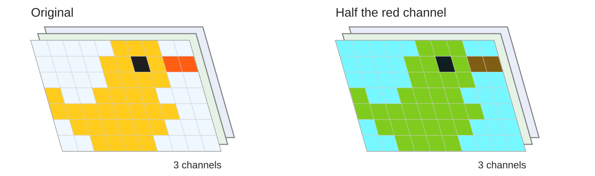
astype(np.uint8) stores the result as whole numbers from 0 to 255.
Broadcasting checkpoint
Compare shapes from the right: equal, or one is 1. Predict success or failure.
Stretch the duck
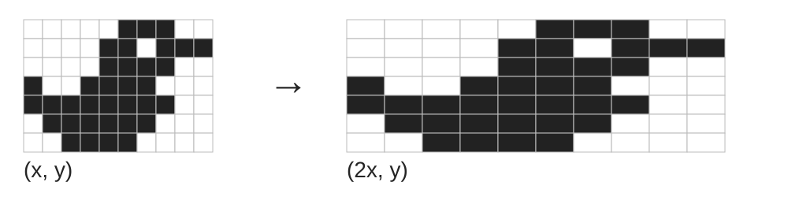
Two multiplication operators
* multiplies corresponding values. @ computes the matrix product.
Sorting values and positions
| Position | Site | Bicycles |
|---|---|---|
| 0 | A | 30 |
| 1 | B | 10 |
| 2 | C | 20 |
argsort gives positions, so labels can follow their values.
10-minute break
Bristol traffic and air quality
Bristol traffic counts
936 rows, 40 count points, 33 survey dates in 2023
One row records one site, one date, one hour and one direction.
The surveys cover hours starting at 07:00 to 18:00.
A dictionary becomes a DataFrame
Keys become column names. Lists supply each column’s values.
The index at the left labels the rows. Here pandas supplies 0, 1 and 2.
| site | bicycles | |
|---|---|---|
| 0 | A | 30 |
| 1 | B | 10 |
| 2 | C | 20 |
The DataFrame index
| bicycles | |
|---|---|
| site | |
| A | 30 |
| B | 10 |
| C | 20 |
set_index('site') uses the site values as row labels.
An index can contain numbers or strings. Labels are separate from row positions.
Series and DataFrame
| bicycles | |
|---|---|
| 0 | 30 |
| 1 | 10 |
| 2 | 20 |
One column with single brackets is a Series.
A list of column names keeps a two-dimensional DataFrame.
Reading a type name
type(column) returns its class.
.__name__ reads the class’s name as a string.
The two underscores on each side mark a special Python attribute. They are part of its name. This attribute is optional here; it just gives us a shorter display.
Read the real CSV
Inspect the data before plotting it.
| count_point_id | hour | bicycles | cars | |
|---|---|---|---|---|
| 0 | 6401 | 7 | 39 | 273 |
| 1 | 6401 | 7 | 12 | 141 |
| 2 | 6401 | 8 | 40 | 308 |
| 3 | 6401 | 8 | 14 | 206 |
Inspect the columns
dtypes reports how values are stored.
isna() tests for missing values. .sum() counts them.
Summarise the values
| bicycles | cars | |
|---|---|---|
| count | 936.0 | 936.0 |
| mean | 8.8 | 583.6 |
| std | 19.6 | 657.7 |
| min | 0.0 | 0.0 |
| 25% | 0.0 | 88.0 |
| 50% | 3.0 | 333.5 |
| 75% | 10.0 | 852.0 |
| max | 313.0 | 3169.0 |
What do the minimum, median and maximum tell us?
Select rows and columns
Choose positions, labels or a Boolean condition. Explain why the selected rows change.
Labels and positions are different
Label slicing includes the endpoint; positional slicing excludes it.
| cycles | |
|---|---|
| A | 30 |
| B | 10 |
| cycles | |
|---|---|
| A | 30 |
Boolean masks
Which rows have at least 30 bicycles and fewer than 300 cars?
Apply the mask
| count_point_id | hour | bicycles | cars | |
|---|---|---|---|---|
| 0 | 6401 | 7 | 39 | 273 |
| 18 | 6401 | 16 | 31 | 282 |
| 23 | 6401 | 18 | 32 | 270 |
| 434 | 74782 | 8 | 31 | 0 |
& combines the conditions. Each condition needs parentheses.
Create a useful new column
Here the denominator is bicycles plus all motor vehicles, not just cars.
| bicycles | total | cycle_share | |
|---|---|---|---|
| 0 | 39 | 432 | 0.090 |
| 1 | 12 | 208 | 0.058 |
| 2 | 40 | 463 | 0.086 |
| 3 | 14 | 275 | 0.051 |
Missing does not mean zero
The traffic extract has no missing counts. This small example deliberately introduces one.
Grouping rows
What would a dictionary of lists look like for these groups?
What groupby returns
groups.groups maps each site to its row labels.
.mean() computes one result per group.
Several summaries for each group
Predict the mean, maximum and number of observations.
Named aggregations
| site | mean_cycles | peak_cycles | observations | |
|---|---|---|---|---|
| 0 | A | 15.0 | 20 | 2 |
| 1 | B | 40.0 | 50 | 2 |
output_name = (source_column, operation)
as_index=False keeps site as a column.
Combine directions within each hour
| Count point | Date | Hour | Direction | Bicycles |
|---|---|---|---|---|
| 6401 | 2023-07-13 | 7 | N | 39 |
| 6401 | 2023-07-13 | 7 | S | 12 |
39 + 12 = 51 bicycles at this site in this hour
| count_point_id | count_date | hour | cars | bicycles | buses | motor_vehicles | |
|---|---|---|---|---|---|---|---|
| 0 | 6401 | 2023-07-13 | 7 | 414 | 51 | 31 | 589 |
| 1 | 6401 | 2023-07-13 | 8 | 514 | 54 | 31 | 684 |
| 2 | 6401 | 2023-07-13 | 9 | 438 | 25 | 41 | 652 |
All three keys must match for rows to belong to the same group.
Summarise each location
Each count column now holds a mean per observed hour.
| count_point_id | cars | bicycles | motor_vehicles | observed_hours | |
|---|---|---|---|---|---|
| 0 | 6401 | 490.8 | 31.4 | 682.6 | 12 |
| 1 | 8599 | 859.2 | 24.1 | 1069.5 | 12 |
| 2 | 16961 | 925.5 | 26.1 | 1224.7 | 12 |
| 3 | 17817 | 812.3 | 7.3 | 1084.7 | 12 |
Attach the locations
Match the count-point key to its road name and coordinates.
| count_point_id | road_name | cars | bicycles | |
|---|---|---|---|---|
| 0 | 6401 | A38 | 490.8 | 31.4 |
| 1 | 8599 | A4 | 859.2 | 24.1 |
| 2 | 16961 | A370 | 925.5 | 26.1 |
| 3 | 17817 | A37 | 812.3 | 7.3 |
validate='one_to_one' checks that each key occurs once in each table.
Matplotlib
import matplotlib.pyplot as pltpyplot provides functions for creating figures.
A Figure is the whole canvas. An Axes is one plotting area.
Like the objects in Week 5, they have methods we can call.
Parts of a plot
Import the module using the alias plt
Create a Figure and an Axes, then unpack the pair
Call a method on the Axes with x and y data
Add labels by calling more Axes methods
Display the Figure when running a Python script
Create the plotting area
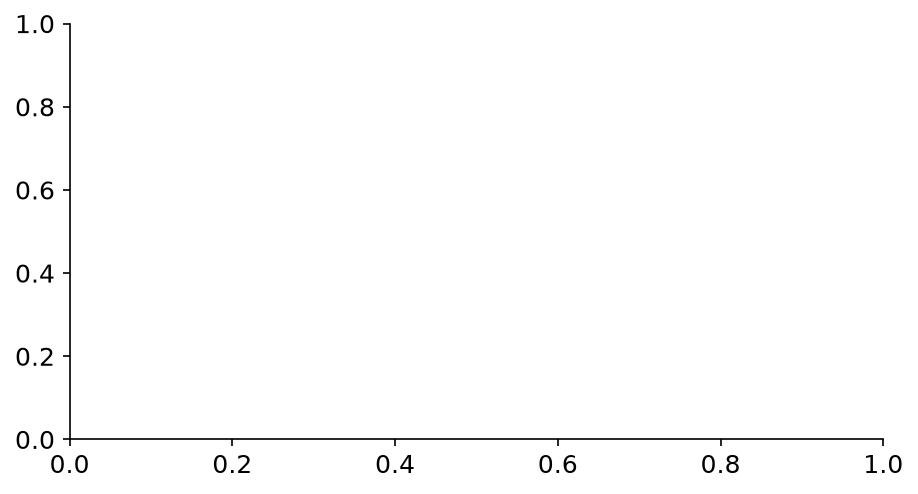
fig refers to the Figure. ax refers to its Axes.
Add the observations
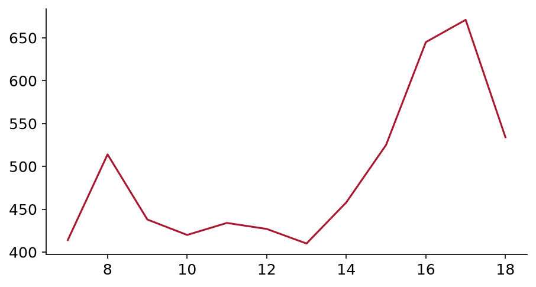
The first argument gives x coordinates. The second gives y coordinates.
Style and label the plot
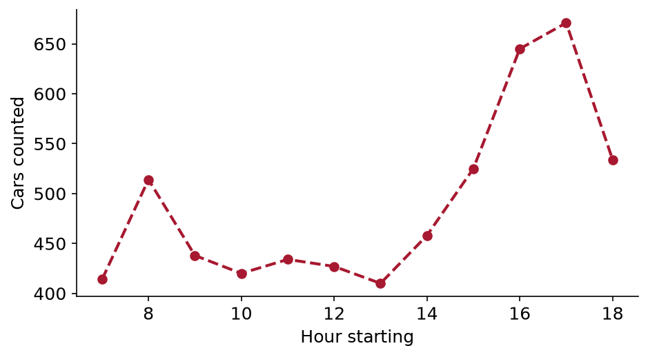
--o requests a dashed line with circular markers.
Two ways to plot
Use pyplot’s current plotting area

Both produce the same plot. Named Axes help when a Figure contains several plots.
Which vehicles did we count?
Compare categories with bars. These totals describe the downloaded survey sample.
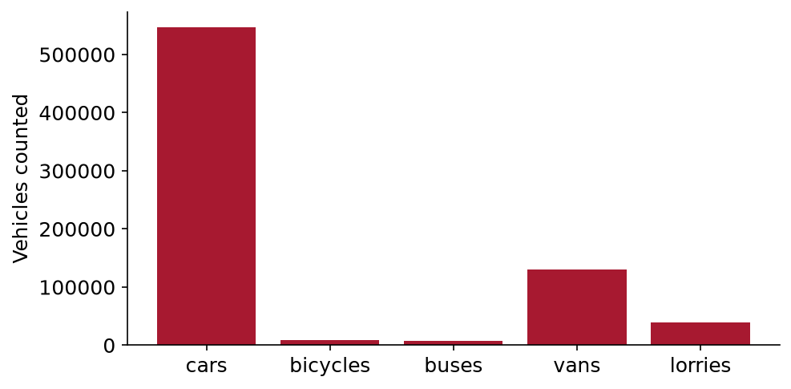
How variable are the bicycle counts?
Predict what changes when we use more bins.
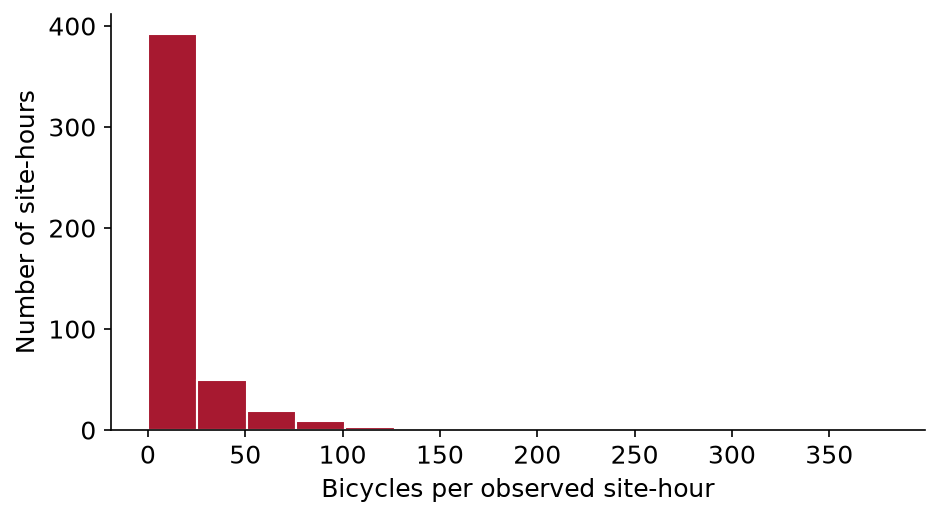
Explore the histogram bins
Use the same observations. Changing bins changes the display, not the measurements.
Do busier sites also have more bicycles?
Each point is a site’s mean observed hourly count.
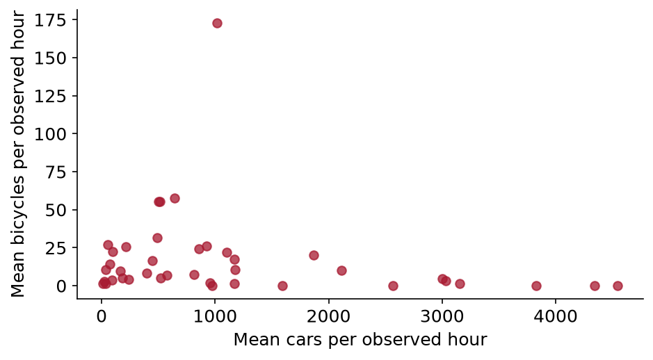
Which locations have the largest bicycle counts?
Horizontal bars leave room for labels. Sort first.
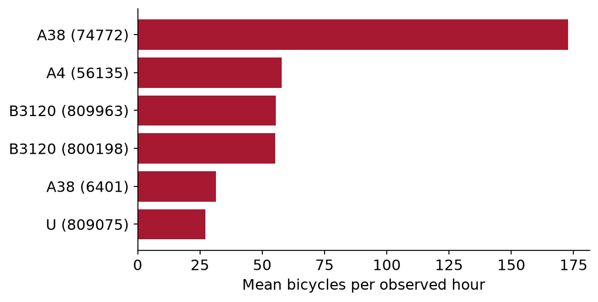
Compare two measures side by side
Shared site labels; different x scales. Which sites change rank?
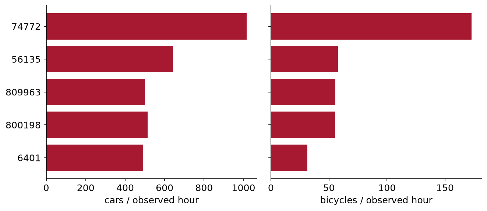
Put the counts on a Bristol map
Circle area shows mean motor vehicles per observed hour.
Add measured air quality
Colour shows the 2023 annual mean NO₂. Circles show sampled traffic hours.
air = pd.read_csv(
'data/bristol_no2_2023.csv')
fig, ax = plt.subplots(figsize=(7, 4.8))
base_map(ax)
ax.scatter(
mapped['longitude'], mapped['latitude'],
s=mapped['motor_vehicles'] / 5,
facecolors='none', edgecolors='#666')
sc = ax.scatter(
air['longitude'], air['latitude'],
c=air['no2_ugm3'], cmap='YlOrRd',
s=22, marker='s', vmin=10, vmax=65)
fig.colorbar(sc, ax=ax,
label='Annual mean NO₂ (µg/m³)')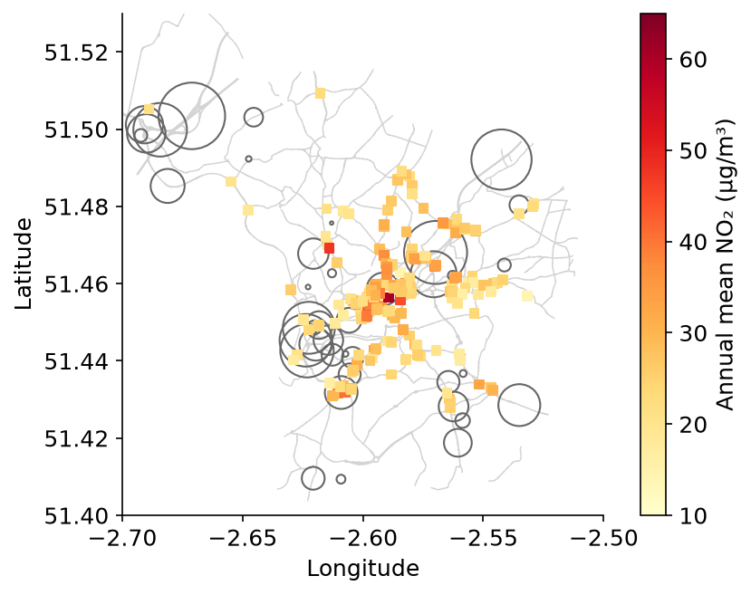
Explore Bristol’s two layers
Toggle traffic and air quality. Inspect a point. Where would you collect more data?
Three questions to finish
1. How do a[1, :] and a[1:2, :] differ?
An integer index removes the row axis. A slice keeps it, giving a two-dimensional result with one row.
2. Why group directions before comparing locations?
Summing directions gives one total per observed site-hour, so we compare the same unit at each location.
3. Why is a missing pollution reading different from zero?
Missing means no observation. Zero is a measured value.
Reference material
Worked examples and function families follow.
Use these to revisit syntax and explore beyond the timed lecture.
The complete code and local datasets accompany this deck.
Reference: Create, combine and split arrays
stack adds an axis. concatenate joins along an existing axis.
split requires equal groups. array_split can make uneven groups.
Reference: Cumulative counts and differences
Cumulative sums answer “how many so far?”; diff answers “how much changed?”
Reference: Elementwise arithmetic
NumPy applies operations to corresponding elements.
Reference: Random samples
A seed makes this example repeatable. Generator.integers is the modern counterpart of np.random.randint; shuffle changes its array.
Reference: Searching and counting
A Boolean mask links values to their positions.
Reference: Solve a linear system
Solve Ax=b directly. Inversion is a separate operation.
Reference: Decomposition and eigenvectors
These are numerical tools to revisit when the mathematics is needed.
Reference: Construct labelled tables
Columns can come from lists, arrays or Series. Series align by label.
| x | y | |
|---|---|---|
| A | 1 | 8 |
| B | 2 | 9 |
| 0 | 1 | 2 | |
|---|---|---|---|
| 0 | 0 | 1 | 2 |
| 1 | 3 | 4 | 5 |
Reference: Duplicate labels and result types
Labels need not be unique. Attribute access works only for suitable column names.
| cycles | |
|---|---|
| A | 10 |
| A | 30 |
Reference: Change and remove data
Use a single loc assignment. Dropping returns a new table by default.
| cars | cycles | |
|---|---|---|
| A | 12 | 2 |
| cycles | |
|---|---|
| A | 2 |
| B | 5 |
Reference: Inner and outer merges
Join on keys. An outer join keeps unmatched keys with missing values.
| site | cars | road | |
|---|---|---|---|
| 0 | B | 20 | X |
| site | cars | road | |
|---|---|---|---|
| 0 | A | 10.0 | NaN |
| 1 | B | 20.0 | X |
| 2 | C | NaN | Y |
Reference: Missing-value choices
Filling needs a reason. Mean filling changes the distribution. dropna(how="all") drops wholly missing rows; fillna(0, inplace=True) modifies the object rather than returning a filled copy.
| x | y | |
|---|---|---|
| 0 | 1.0 | NaN |
| 2 | 3.0 | NaN |
| x | |
|---|---|
| 0 | 1.0 |
| 1 | NaN |
| 2 | 3.0 |
| x | y | |
|---|---|---|
| 0 | 1.0 | NaN |
| 1 | 2.0 | NaN |
| 2 | 3.0 | NaN |
Reference: Iterate over groups
Grouping records how rows are partitioned; aggregation computes a summary.
| count | mean | max | |
|---|---|---|---|
| direction | |||
| E | 240 | 9.5 | 211 |
| N | 216 | 6.8 | 49 |
| S | 228 | 7.3 | 62 |
| W | 252 | 11.3 | 313 |
Reference: Pivots and time series
A pivot reshapes grouped results; resampling changes time frequency.
| bicycles | cars | |
|---|---|---|
| hour | ||
| 7 | 18.475 | 1165.075 |
| 8 | 31.525 | 1208.975 |
| 9 | 15.525 | 960.625 |
| 10 | 9.025 | 895.675 |
| 11 | 8.150 | 936.850 |
| x | |
|---|---|
| 2023-01-01 00:00:00 | 3 |
| 2023-01-01 02:00:00 | 7 |
Reference: Display an image
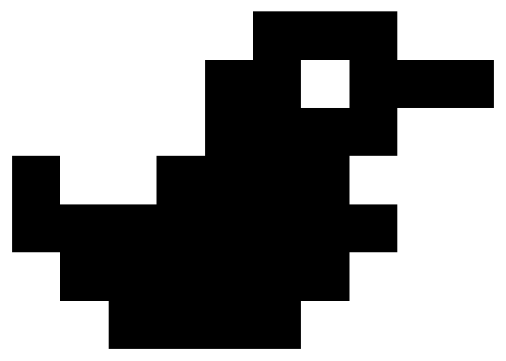
imshow turns array values into an image. Here 0 is white and 1 is black.
Reference: Figure, Axes and Axis
Figure = whole canvas; Axes = plotting area; Axis = coordinate ticks and labels. Spines bound the plotting area. plt.figure() creates a Figure; plt.subplot() returns one Axes; plt.subplots() returns both.
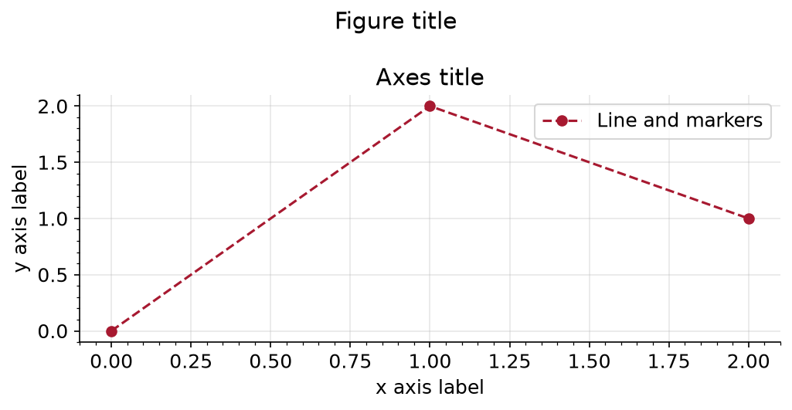
Reference: Line styles and sampling
Implicit x starts at zero. Explicit x gives coordinates their meaning.
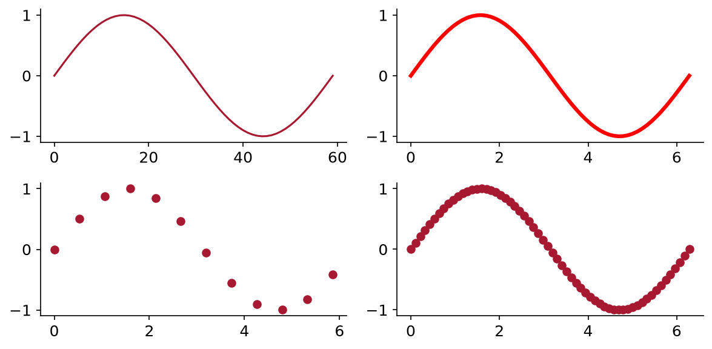
Reference: Scatter encodings
s is marker area. c can be values mapped through a colour map.
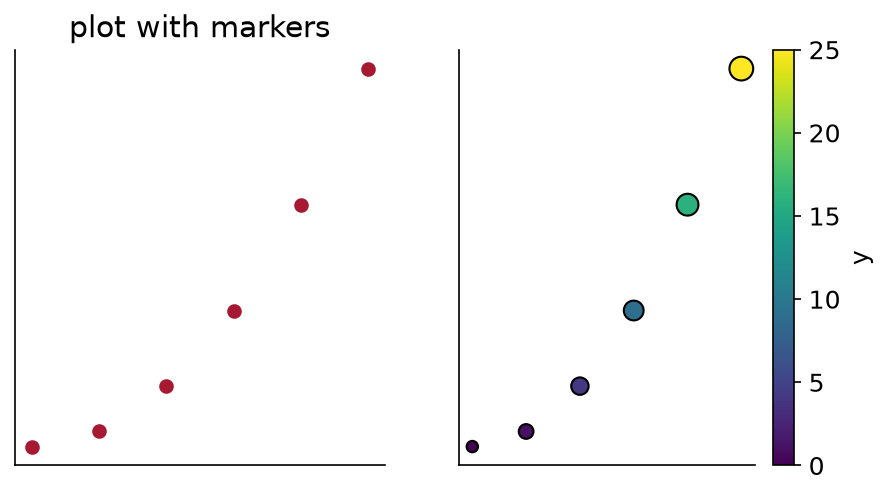
Reference: Histogram options
np.histogram returns numbers; ax.hist also draws the bars.
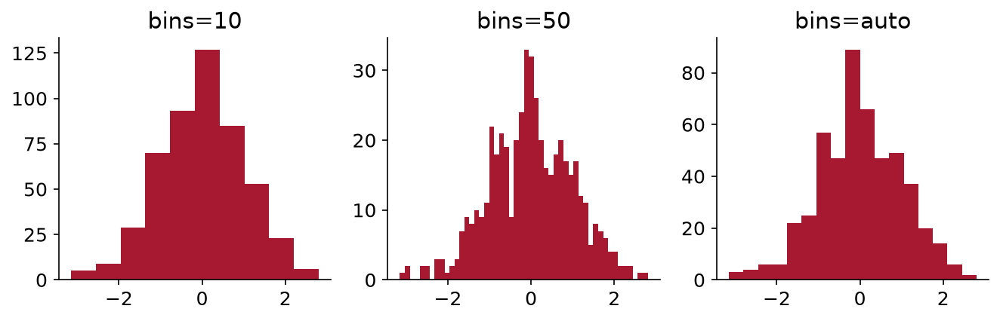
Reference: Bars and a pie alternative
Bars support precise comparisons. Pie slices show parts of one total.
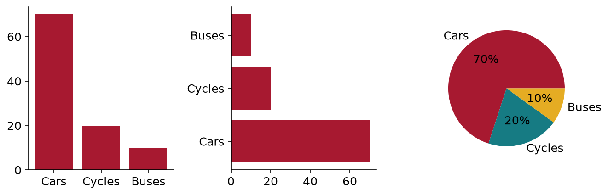
Reference: Layouts and reference lines
Use common scales only when the quantities and comparison warrant them.
fig, axes = plt.subplots(2, 1, sharex=True, figsize=(7, 4))
for ax, col in zip(axes, ['cars', 'bicycles']):
y = site_hour.groupby('hour')[col].mean()
ax.plot(y.index, y, label=col)
ax.axhline(y.mean(), ls='--', color='grey', label='Mean')
ax.set_ylabel(col); ax.legend()
axes[1].set_xlabel('Hour'); fig.tight_layout()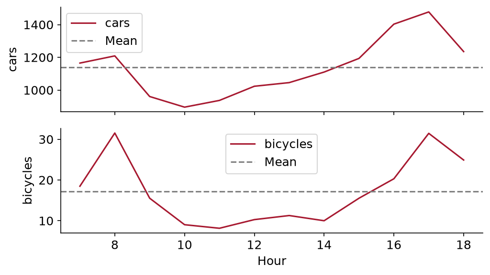
Reference: Arithmetic and rounding
add, subtract, multiply, divide / true_divide, floor_divide, power, reciprocal, negative, abs / absolute, floor, clip
fmod, mod / remainder and modf differ in their treatment or return of remainders/fractional parts.
Reference: Logs and hyperbolic functions
exp, expm1, exp2; log, log10, log2, log1p; logaddexp, logaddexp2
sinh, cosh, tanh; arcsinh, arccosh, arctanh. These act elementwise; domain restrictions still apply.
Reference: Reductions and numerical tools
sum, nansum, prod, min, max; cumsum, cumprod; diff, ediff1d, gradient, cross
histogram counts bins; transpose swaps axes; polyfit fits a polynomial; trapezoid integrates sampled values. The older name was trapz. These are not all ufuncs.
Reference: Products and decompositions
np.dot, vdot, inner, outer, matmul, tensordot, einsum, kron; np.linalg.matrix_power
np.linalg.cholesky, qr, svd; eig, eigh, eigvals, eigvalsh. eigh/eigvalsh target symmetric or Hermitian matrices.
Reference: Systems and matrix quantities
np.linalg.solve, tensorsolve, lstsq, inv, pinv, tensorinv
np.linalg.norm, cond, det, matrix_rank, slogdet; np.trace. Use solve for Ax=b; lstsq for least squares.
Reference: Sorting and searching
np.sort, lexsort, argsort, sort_complex, partition, argpartition; ndarray.sort modifies the array
argmax, nanargmax, argmin, nanargmin, argwhere, nonzero, flatnonzero, where, searchsorted, extract, count_nonzero. Removed msort → np.sort(a, axis=0).
Reference: importing other sources
| Source | Entry point |
|---|---|
| CSV or CSV URL | pd.read_csv(...) |
| Excel | pd.read_excel(...) |
| SQL query / connection | pd.read_sql(...) |
| Clipboard | pd.read_clipboard() |
Use header, names and index_col deliberately. reindex aligns to chosen labels. External analytics services need their own API/connector.
Reference: further pandas analysis
Pivot tables: reshape summaries. Periods and frequencies: express time intervals. Resampling: aggregate or expand a time grid; upsampling does not invent measurements.
Quantiles/deciles: divide a distribution. Rolling correlation/regression: investigate moving windows; regression needs an appropriate statistical implementation.
Frontier analysis and futures rolling are financial applications rather than core pandas methods.
Reference: Scientific libraries
| Library | Further uses |
|---|---|
| NumPy | Random sampling, Fourier transforms, array operations and compiled extensions |
| SciPy | Integration, optimisation, interpolation, statistics and numerical algorithms |
| scikit-learn | Machine learning models and evaluation |
| Pillow | Reading and writing image files |
Reference: choosing a plotting library
| Need | Options |
|---|---|
| Quick plots from a table | pandas plotting |
| Statistical graphics | Seaborn |
| Browser interaction | Plotly, Bokeh, HoloViews, Altair, bqplot |
| Model diagnostics | Yellowbrick |
| Grammar-of-graphics style | plotnine |
| 3D plots / geographical work | Matplotlib mplot3d / specialist mapping tools |
The map examples use downloaded street geometry.
Reference: sources and interpretation
Traffic: DfT raw counts, Bristol, 2023. Air: Bristol annual NO₂ measurements, 2023. Public-sector data: Open Government Licence, subject to source notices.
Map: Bristol City Council classified streets. See the bundled source metadata for rights information.
Data provenance and processing
Further reading: Python for Data Analysis, NumPy/pandas/plotting chapters; check your edition’s chapter numbering.
bristol.ac.uk